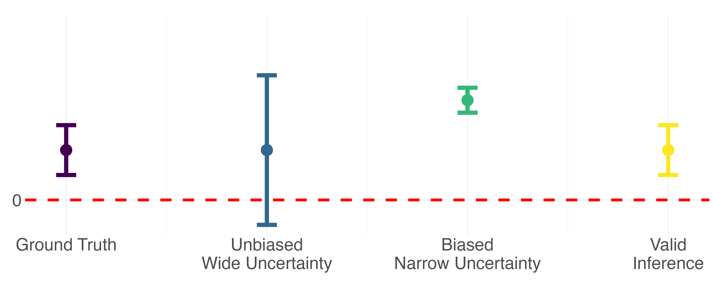

What is "predicted data"?
In machine learning, "predicted data" are often thought of as the outputs from
some kind of complicated algorithm. I opt for an even broader definition:
any
indirect measure of a conceptual variable where a better, more direct measure exists.
This definition of course includes predictions from black-box machine learning or artificial
intelligence models like chatGPT, but also includes other examples we encounter often as social
scientists, like survey responses, interviews, imputations, statistical estimates, derived measures,
and a whole host of other proxies. Below are some examples I have come across in my own research.
Every conceptual variable comes with different measurement challenges, but in general, more precise
measurements are also more expensive to collect. A stylized image below shows that "ground truth"
direct measures
tend to live in the light blue region, with predicted data everywhere else. Because the best measures tend to be the most
expensive, we often end up relying on cheaper and noisier predicted data in practice. But not all predicted data
are created equal. The best are those depicted in the green region - relatively
precise and cheap compared
to the red region -
noisy and expensive.
Predicted vs Ground Truth Data
Measurements vary in both cost and precision
| Variable |
Ground Truth |
Predicted |
| Cause of Death |
Vital Registration |
Verbal Autopsy |
| Obesity |
Fat Percentage |
BMI |
| Income |
Admin Data |
Self Reported |
| Environmental Attitude |
Questionnaire |
NLP Sentiment |
What does it mean for inference on predicted data to be invalid?
In this context, valid statistical inference refers to both
un-biased point estimates and
precise uncertainty bounds. Relative to inference performed with "ground truth"
outcomes, inference on predicted data may have biased point estimates due to systematic
differences between predictions and the ground truth, and the reported uncertainty will be
deceivingly narrow because it doesn't account for any of the prediction error.
Why does this matter? Consider a very simple hypothesis test where the p-value tells us whether
or not an observed relationship between X and y is statistically significant. This conclusion is
a function of both the point estimate and the uncertainty around that point estimate. The stylized
diagram below demonstrates how bias and conservative uncertainty might lead to very different
scientific conclusions.
Inference can have bias and/or misleading uncertainty

So how do you perform valid inference on predicted data?
There are several existing methods for performing the bias correction for valid inference
with predicted data. While the technical details differ, these methods are built upon the same intuition.
At its simplest, you incorporate what you learn when you have access to both ground truth and predicted
outcomes into downstream inference where you rely solely on predicted outcomes.
The two step procedure looks like this:
- Using side-by-side ground truth and predicted measures of the outcome variable, estimate
the IPD rectifier, Δ. This tells you how differences between Y and Ŷ are
associated with covariates X for the same observation.
(Y1 - Ŷ1) = ΔX1
- Now, when you perform inference with predicted outcomes in the absence of ground truth
measured outcomes, you incorporate the rectifier Δ into the naive parameters you estimate to
recover valid IPD estimates.
Invalid IPD → Ŷ2 = Œ∏X2
Correct IPD → Ŷ2 = (Œ∏+Δ)X2
Cartoon example: height and basketball ability
We are interested in the association between a person's height and an index of their
basketball ability on a scale from 1-10. Height can be measured directly,
or from a self-report. Some people might report correctly,
others might not, so we consider the self-reported height
predicted data
relative to directly measured height as
ground truth data.
Oops! It looks like some people report being a couple inches taller than they actually are...
How does this affect our conclusion about the association between height and basketball ability when
we are relying on mostly self-reported height outcome? Let's see. This is what it looks like to learn the
rectifier Δ from the labeled data to correct inference performed on the
unlabeled data.
First, we have some labeled data, ℓ, with observed basketball ability üèÄ,
with both measured height üìè and self-reported height ‚úèÔ∏è. We also have some unlabeled data,
μℓ, with observed basketball ability üèÄ and only self-reported height ‚úèÔ∏è.
For the labeled data ℓ, we can specify the relationship, β, between
height (measured, üìè, ym or reported, ‚úèÔ∏è, yr) and basketball ability (üèÄ, X)
with the following equations:
yüìè = βüìèüèÄℓ or ym = βmXℓ
y‚úèÔ∏è = β‚úèÔ∏èüèÄℓ or yr = βrXℓ
with solution for βm Δ written as βm = (XℓTXℓ)-1XℓTym
and solution for βr written as βr = (XTX)-1XTyr
and residuals between measured and self-reported height:

In this example, the
rectifier Δ is -1.375. To recover IPD corrected estimated β
r for the
unlabeled data
μℓ, we first estimate β
r from y
r =
β
rX
μℓ. We find that β
r is 1.41. Then, we subtract the rectifier Δ from β
r
to find β
IPD. All together, we have
βIPD = βr - Δ
1.41 - (-1.375) = 2.78
βIPD = 2.78
As you can see, leveraging the relationship between directly measured height üìè and self-reported height ‚úèÔ∏è
in the labeled dataset
ℓ enables us to produce a valid estimate β
IPD in the unlabeled dataset
μℓ.
How to determine if you IPD correction makes sense for your problem:
IPD References
(in order of publication date)
-
Methods for correcting inference based on outcomes predicted by machine learning. (PostPI)
Wang, McCormick and Leek. 2020 PNAS.
-
Prediction-powered inference. (PPI)
Angelopoulos, Bates, Fannjiang, Jordan and Zrnic. 2023a Science.
-
PPI++: Efficient Prediction-Powered Inference. (PPI++)
Angelopoulos, Duchi and Zrnic. 2023b arxiv.
-
Assumption-Lean and Data-Adaptive Post-Prediction Inference. (PSPA)
Miao, Miao, Wu, Zhao and Lu. 2023 arxiv.
-
Do We Really Even Need Data? ü¶è
Hoffman, Salerno, Afiaz, Leek and McCormick. 2024 arxiv.
-
Code respository for the `ipd` package can be found here.